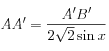

Le miroir primaire terminé, reste à construire la monture.
Il faut d'abord choisir la position de l'oculaire et le diamètre du cône de lumière que l'on veut récupérer (la “pupille de sortie”).
Il faut ensuite déterminer la position et la dimension du miroir secondaire.
N'ayant trouvé cela ni sur internet ni dans un livre, j'ai fait le calcul. Les résultats obtenus sont cohérents, mais ça vaudrait peut-être le coup de les vérifier.
Il faut d'abord choisir la position de l'oculaire et le diamètre du cône de lumière que l'on veut récupérer (la “pupille de sortie”).
Il faut ensuite déterminer la position et la dimension du miroir secondaire.
N'ayant trouvé cela ni sur internet ni dans un livre, j'ai fait le calcul. Les résultats obtenus sont cohérents, mais ça vaudrait peut-être le coup de les vérifier.
Figure 1 Trajet d'un rayon non parallèle à l'axe
Le miroir primaire est une portion de “paraboloïde de révolution”, surface générée par une parabole tournant sur elle-même autour de son axe, que l'on appelle axe du miroir.
On a la propriété : tout rayon lumineux parallèle à l'axe de la parabole est réfléchi au foyer.
Le miroir est le “fond” de ce paraboloide de révolution, un cercle de 30 cm de diamètre ; l'axe du miroir passe par son centre. Ainsi, si on coupe le miroir en passant par son centre, on a un morceau de parabole (à quelques centièmes de microns près).
On a la propriété : tout rayon lumineux parallèle à l'axe de la parabole est réfléchi au foyer.
Le miroir est le “fond” de ce paraboloide de révolution, un cercle de 30 cm de diamètre ; l'axe du miroir passe par son centre. Ainsi, si on coupe le miroir en passant par son centre, on a un morceau de parabole (à quelques centièmes de microns près).
On nomme :
- O le centre du miroir
- F le foyer du télescope
- d la “pupille de sortie”
Dans une parabole, tout rayon parallèle à l'axe de la parabole est réfléchi au foyer.
Ça n'est pas vrai pour un cercle, c'est pour ça qu'on est obligés d'avoir un miroir parabolique.
Ainsi, tous les rayons lumineux arrivant parallèles à l'axe seront réfléchis dans un cône de sommet F
Pour récupérer la lumière, on se place au foyer, et on y pose l'occulaire.
On cherche donc à intercepter la lumière réfléchie dans un cercle de centre F et de diamètre d
Ce cercle nous amène à construire un deuxième cône, de sommet G
Le schéma est donc le suivant :

Figure 2
Pour observer, on ne peut pas mettre la tête directement en F, sinon on cacherait la lumière.
C'est pourquoi on place le miroir secondaire, un petit miroir plan à 45°,
qui doit intercepter les rayons réfléchis dans le cône de sommet G , et les dévier vers le porte-occulaire.
C'est pourquoi on place le miroir secondaire, un petit miroir plan à 45°,
qui doit intercepter les rayons réfléchis dans le cône de sommet G , et les dévier vers le porte-occulaire.
Le miroir secondaire est l'intersection entre un plan et un cône, c'est donc une ellipse.
AB est le grand axe de cette ellipse, et C son centre.
Sur la figure 2, on voit que le miroir est décalé par rapport à l'axe du télescope.
Regardons la zone en jaune : la partie de AB dans le cône de sommet G, mais hors du cône de sommet F.
Comme le miroir est incliné, cette partie est plus petite en A qu'en B.
L'axe du télescope ne coupe donc pas le miroir en son centre.
On va donc aussi récupérer des rayons lumineux non parallèles à l'axe.
On note C' l'intersection entre le miroir et l'axe du télescope.
Le petit axe de l'ellipse est C1C2 = A1B1.
C'est cette valeur du petit axe qu'il faut spécifier lorsqu'on achète un miroir secondaire.
Le but de cette page est donc de calculer :
- la distance AB,
- la position de C,
- le petit axe A1B1
- la distance AB,
- la position de C,
- le petit axe A1B1
Notations
On a déjà vu :
- O le centre du miroir
- F le foyer du télescope
- G le sommet du deuxième cône
- On rajoute F', le “foyer virtuel” que l'on utilise, après déviation des rayons par le miroir secondaire.
- D, le diamètre du miroir ;
- f, la focale du miroir ;
- f”, la flèche du miroir ;
Valeurs pour mon télescope :
D = 253 mm
f = 1260 mm
f” = 3,18 mm
L'épaisseur du matériau utilisé pour la construction de la monture nous donne e (4 mm pour mon télescope).
Reste à choisir plusieurs valeurs :
-
d, la pupille de sortie : dépend de l'usage qu'on veut faire du télescope. Pour de l'observation à l'oeil, j'ai pris 11 mm, ce qui laisse de la marge par rapport à la pupille de l'oeil (8mm au maximum, lorsqu'elle est dilatée).
[Pour de la photo ou de la CCD, c'est un vaste sujet...] - δ, la marge entre le bord du miroir et le bord intérieur du tube : important, car la turbulence s'écoule le long du tube.
-
d1, la place occupée par le porte-oculaire, la distance entre le bord extérieur du tube et F'.
Le choix de d1 dépend de la place que l'on veut pour le porte-oculaire. Plus on veut un d1 grand, plus on doit placer le miroir secondaire bas, et plus AB sera grand, plus le miroir secondaire occultera une part importante de lumière ; on a donc intérêt à ne pas avoir un d1 inutilement trop grand.
d = 11 mm
δ = 30 mm
d1 = 40 mm
On a maintenant suffisament de données pour déterminer AB et la position de C.
Les applications numériques (notées a.n.) correspondent aux valeurs de mon télescope.
Autres notations :
- R est le rayon du miroir ; R = D/2.
- C est le centre du miroir secondaire.
- C' est l'intersection entre l'axe du miroir primaire et le miroir secondaire.
- h = d1 + δ + e
- f ‘ = f - f “
- h' = OC'
- Autres variables : voir figure 2
1. Calculs préliminaires
-
h' : on a :
h' + R + h = f'.
Donch' = f' - R - h. - α :
- l : par Thalès en partant de G, on a :
Or GF = l et GO = f' + l.
Donc , ce qui donne : .
Or
GO = f' + l et GC' = f' + l - h'.
Donc , ce qui donne :
On a :

a.n. :
γ = 5,5°
2. Calcul de AB
On décompose en AB = AC' + C'B2.1 Calcul de AC'
On introduit l'angle x ;
x + π/4 + π/2 + γ = π, donc x = π/4 - γ.
On a :
C'A = C'H + HA
D'une part
D'autre part
On ne connaît pas AA', alors on s'en débarasse :
on a et , ce qui donne : 
Donc .
Finalement :
Formule [1]
2.2 Calcul de C'B
On introduit l'angle y ; y + π/2 - γ + π/4 = π, donc y = π/4 - γ.
En suivant la même méthode que pour AB, on obtient :
Formule [2]
Détails du calcul
On a : C'B = C'H + HB
HB = C'B'cos(π/4) = A'B'/2cos(π/4) = A'B'/2sqrt(2).
HB = BB'cos(y).
On ne connaît pas BB', alors on s'en débarasse :
on a : B'H = BB'sin(y)
et : B'H = C'B'sin(π/4)
ce qui donne : BB' = A'B'/(2sqrt(2)sin(y)).
Donc HB = A'B'/(2sqrt(2)tg(y)).
2.3 Calcul de AB
En combinant [1] et [2], on obtientEn exprimant x et y en fonction de γ, on obtient enfin
a.n. : AB = 61.5 mm
Infos supplémentaires
Au passage, la présence du miroir secondaire cache une partie de la lumière.Ce sont les rayons arrivant dans un cercle de rayon
Le pourcentage de rayons arrêtés est : (pourcentage en surface)
a.n. : p = 11,8%.
3. Position de C
Si quelqu'un veut vérifier j'ai scanné les détails : scan_details_c.jpg.{kind=link}
a.n. : CC' = 4,39 mm
Figure 2 simplifiée
En définissant un repère (O1, x, y, z), avec :
- O1y passant par O
- O1z parallèle à l'axe du télescope
Dans (O1, x, y, z), les coordonnées de C et C' sont :
et ,
avec
Calcul du petit axe A1B1
a.n. : A1B1 = 37,5 mm
A Vérifier
Pour que ces calculs puissent être considérés comme fiables, il faudrait que d'autres que moi les vérifient (ça a été vérifié par une personne) ; la seule chose que je puisse dire, c'est que ça a donné des résultats cohérents pour mon télescope.Si quelqu'un a connaissance d'un livre ou d'un site qui a fait la même chose, merci de me le faire savoir.